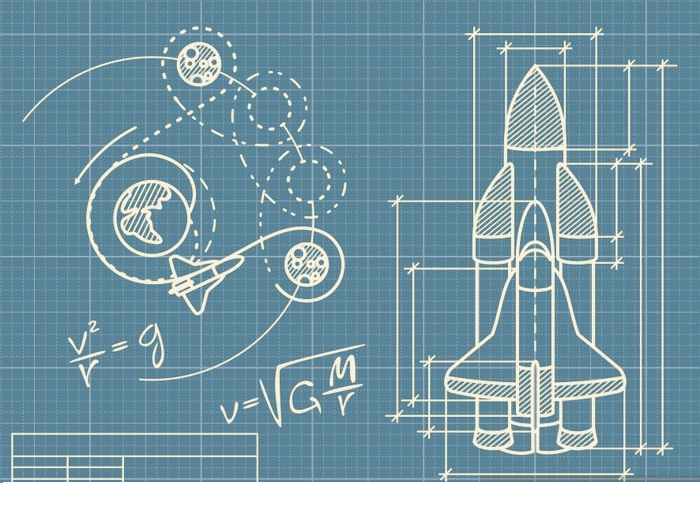

Primele misiuni spațiale
Misiunile spațiale de la mijlocul secolului XX au avut rol științific și de comunicații și au trimis sonde științifice pentru a explora planetele sistemului solar, începând cu Venus și Marte, inclusiv un program de studiere a planetelor exterioare. Experimentele efectuate au inclus mecanica solului, meteoroizi, seismologie, transferul de căldură, reflexiile fasciculului laser, câmpul magnetic și vântul solar.
